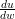
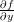
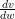
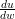
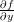
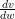
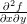
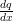

| Up | Next | Prev | PrevTail | Tail |
This package supports computations with total and partial derivatives of formal function objects. Such computations can be useful in the context of differential equations or power series expansions.
The package DFPART supports computations with total and partial derivatives of formal function objects. Such computations can be useful in the context of differential equations or power series expansions.
A generic function is a symbol which represents a mathematical function. The minimal information about a generic function function is the number of its arguments. In order to facilitate the programming and for a better readable output this package assumes that the arguments of a generic function have default names such as f(x,y),q(rho,phi). A generic function is declared by prototype form in a statement
 ⟨argn⟩);
⟨argn⟩);where fname is the (new) name of a function and argi are symbols for its
formal arguments. In the following fname is referred to as “generic function",
arg1,arg2 argn as “generic arguments" and fname(arg1,arg2
argn as “generic arguments" and fname(arg1,arg2 argn) as “generic
form". Examples:
argn) as “generic
form". Examples:
After this declaration REDUCE knows that
  + 
 + 
The operator DFP represents a partial derivative:
 ⟨dfargn⟩);
⟨dfargn⟩);where expr is a function expression and dfargi are the differentiation variables. Examples:
means  and
and
stands for  (u,v). For compatibility with the DF operator the differentiation
variables need not be entered in list form; instead the syntax of DF can be used, where
the function expression is followed by the differentiation variables, eventually with
repetition numbers. Such forms are interenally converted to the above form with a list as
second parameter.
(u,v). For compatibility with the DF operator the differentiation
variables need not be entered in list form; instead the syntax of DF can be used, where
the function expression is followed by the differentiation variables, eventually with
repetition numbers. Such forms are interenally converted to the above form with a list as
second parameter.
The expression expr can be a generic function with or without arguments, or an arithmetic expression built from generic functions and other algebraic parts. In the second case the standard differentiation rules are applied in order to reduce each derivative expressions to a minimal form.
When the switch NAT is on partial derivatives of generic functions are printed
in standard index notation, that is fxy for  and fxy(u,v) for  (u,v).
Therefore single characters should be used for the arguments whenever possible.
Examples:
(u,v).
Therefore single characters should be used for the arguments whenever possible.
Examples:
The difference between partial and total derivatives is illustrated by the following example:
Cooperation of partial derivatives and Taylor series under a differential side relation  = f(x,q):
Normally partial differentials are assumed as non-commutative
However, a generic function can be declared to have globally interchangeable partial derivatives using the declaration DFP_COMMUTE which takes the name of a generic function or a generic function form as argument. For such a function differentiation variables are rearranged corresponding to the sequence of the generic variables.
If only a part of the derivatives commute, this has to be declared using the standard REDUCE rule mechanism. Please note that then the derivative variables must be written as list.
When a generic form or a DFP expression takes part in a substitution the following steps are performed:
Examples:
The dataset dfpart.tst contains more examples, including a complete application for computing the coefficient equations for Runge-Kutta ODE solvers.
| Up | Next | Prev | PrevTail | Front |